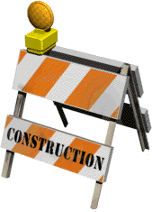

welcome! i go by justanotherinternetguy or nyaarch online (mostly -- i experiment with other usernames as well). this is my personal website and blog. i am a high school senior interested in computer science/engineering, physics, biology, and deep learning. i am researching in the intersection of speech, linguistics, deep learning, and human-machine interaction. right now, i am working on deep learning methods to detect and correct speech impairments (mainly stutters).
- i use nixos and arch linux
- in my free time, i enjoy learning conlangs and linguistics. i am currently learning esperanto and toki pona.
- i also am a fan of aviation, especially military aircraft
- i am an (in)active wikipedia editor
life updates
11/10/2025 - finished my early college applications, starting work on writing my regular decision essays now.
website updates
i have just updated my website UI again! i will be adding more cool visuals and details later, but i am quite bogged down with college applications at the moment.

obligatory construction gif